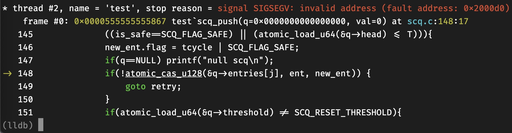

Be careful when writing assembly
Table of Contents
最近在写一个用户态抢占式调度线程。这次想写细致和全面一些（基准性能 && 支持异步IO）。一些原子操作我选择汇编实现，踩了一些坑，花了很长时间才定位到问题出在汇编代码上。
1. DEBUGGING
当你遇到以下类似的BUG时，你很可能需要检查一下自己的汇编代码是否出错。
1.1. Be aware of non-volatile registers
根据System V AMD64 ABI, %rbp, %rsp, %rbp, %rbx, %r12, %r13, %r14, %15 是non-volatile registers(callee-saved)。 caller从called function中返回后，认为这些寄存器的值是不变的。 如果callee有涉及修改这些寄存器的操作，则它复制在函数开始/返回前保存和恢复这些寄存器的值。
有时候，所写的汇编函数很短，不涉及栈上操作，很容易忽视以上规则。如以下函数：
// proto: u128 atomic_load_u128(u128* addr) atomic_load_u128: movq %rax, %rbx movq %rdx, %rcx LOCK cmpxchg16b (%rdi) retq
该函数原子地读取addr地址处的128bit(16B)数据。 cmpxchg16b 将 (addr) 和 rdx:rax 比较，若相等，将 rcx:rbx 存到 (addr) 处；否则，将 (addr) load到 rdx:rax 中。 因此，令 rcx:rbx 等于 rdx:rax ， rdx:rax 中肯定是 (addr) 处的值。
这个函数错在 movq %rax, %rbx 修改了 %rbx 的值，而该函数并没有保存和恢复 %rbx 的原始值。
在如下这段程序中，caller使用了 %rbx ，而atomicloadu128改变了它，导致程序出错。

另外，这是我之前的另一个函数，存在相同问题：
// int atomic_cas_u128(u128* addr, u128 old, u128 new) atomic_cas_u128: movq %rsi, %rax movq %rcx, %rbx movq %r8, %rcx LOCK cmpxchg16b (%rdi) sete %al retq
因此出现了如下错误：

图中， scq_push(scq_t *q, u64 val) 传入的q是一个有效的指针，且scq_push没有对q做过任何修改，在执行到149行后，q变为了0x0，像幻觉一样。这是因为在 movq %rcx, %rbx 时，修改了 rbx ，而 rcx 存的是 new.data=val=0 ，因此，在返回后，q变为了0。
修改后的正确函数如下：
atomic_load_u128: movq %rbx, %rax movq %rcx, %rdx LOCK cmpxchg16b (%rdi) retq atomic_cas_u128: pushq %rbx movq %rcx, %rbx movq %rsi, %rax xorl %esi, %esi movq %r8, %rcx lock cmpxchg16b (%rdi) sete %sil movl %esi, %eax popq %rbx retq
对于第一个函数，我们把 %rbx mov到 %rax ，就不需要保存 rbx 了。
对于第二个函数， %rbx 是一定会被修改的，我们需要在开始时将其保存到栈上，返回前再恢复。
总结一下，这种missing会导致很多奇怪的错误。上面的例子只是其中一种。如果被修改的寄存器存的是某个变量的地址，在后续访问该变量时，程序可能会抛出SIGSEGV。如果存的是某个变量的值，那程序甚至不会抛出任何异常，只是你的代码的行为变为unexpected了。例如，如果上面 rbx 存的是val的值，那我可能一个月后也不会发现问题，因为仅仅是我的存入 q->entries[j] 的val是错误的。
1.2. Blame yourself before blaming your compiler
如果你没有在写操作栈帧的代码（如buffer overflow），或者直接操作指令寄存器的代码（如JIT），大量硬件层面的汇编代码、大量操作向量寄存器的代码等，那请相信你的编译器。
很多时候，我们的代码在Debug模式（-O0）下运行“没有问题”（指没有报错，测试case通过），自信满满地开启Release模式（-O2或-O3）后，各种segmentation fault，freeing twice的错误、各种deadlock铺天盖地地袭来，然后开始责怪编译器做了奇怪甚至错误的激进优化。
忘了在哪看到过一句话：
When a bug goes away by disabling optimizations, most of the time, it's still your fault.
拿上面的例子来说吧，原先的代码最初在关闭优化的情况下，我也没看到有异常抛出。这是为什么，明明rbx的值被修改了？
我们找个简单的函数看一下-O0和-O3下生成的汇编代码的区别：
int add(int a, int b){ int c = a+b; int d = a-b; int e = d; int f = do_nothing(c, d, e, a); return a; }
// -O0
add:
pushq %rbp
movq %rsp, %rbp
subq $32, %rsp
movl %edi, -20(%rbp)
movl %esi, -24(%rbp)
movl -20(%rbp), %edx
movl -24(%rbp), %eax
addl %edx, %eax
movl %eax, -4(%rbp)
movl -20(%rbp), %eax
subl -24(%rbp), %eax
movl %eax, -8(%rbp)
movl -8(%rbp), %eax
movl %eax, -12(%rbp)
movl -20(%rbp), %ecx
movl -12(%rbp), %edx
movl -8(%rbp), %esi
movl -4(%rbp), %eax
movl %eax, %edi
call do_nothing
movl %eax, -16(%rbp)
movl -20(%rbp), %eax
leave
ret
// -O3
add:
pushq %rbx
movl %edi, %eax
movl %edi, %ebx
leal (%rdi,%rsi), %edi
subl %esi, %eax
movl %ebx, %ecx
movl %eax, %edx
movl %eax, %esi
call do_nothing
movl %ebx, %eax
popq %rbx
ret
可以看到，在-O0时，编译器主要在栈上分配局部变量。在-O3时，编译器会尽量使用寄存器存储局部变量。因此，在之前错误的代码中， %rbx 没有被caller用到，自然被callee修改也没有影响。
1.2.1. suggestions
除了上述例子，一个在并发场景下经常会遇到的问题就是指令重排（re-ordering）。
说一个我以前的经历，调试一个文件系统，Debug模式正常，切到-g -O2下不正常，一个我认为值应该改变了的变量，却没有变。加上printf打印该变量，又正常了。 删掉printf，用gdb打断点，也是正常的。
最后发现其实在开启优化的条件下，编译器会将一些读写指令重排，如果你写的是多线程程序，这很可能导致你的程序运行进入一个不一致的状态。这要求你手动插入一些读写屏障（或内存栅栏），这个问题很复杂，涉及到内存模型、缓存一致性等内容，不同cpu指令集的内存模型的强弱是不一样的。
基于指令集提供的保障内存序的指令，可以实现基本的原子操作，进而实现锁、信号量等各种同步原语。从内存屏障->原子操作->锁，同步的范围变大，但性能也越变越差。
printf打印变量可能改变了生成的代码，gdb打断点可能会插入内存屏障，造成行为不一样，难以调试。
但这不是编译器的BUG，而是程序的并发逻辑错误或者没有正确地同步共享变量。
你可以选择使用内存屏障(如mfence，std::memory_order)、原子操作(如gcc内置的__sync__)、锁（如spinlock，linux futex）等来同步你的线程对于共享变量的访问。 从左到右序依次增强、同步逻辑依次简化，但开销也依次增大。
1.3. setc, sete, setz, setb等
这几个指令会的目的寄存器是单字节的，如 %al, %dil, %cl ， 它们分别代表 %rax , %rdi, %rcx 的最低8位。
如 setz %al 会根据状态寄存器的ZF标志位，将 %al 置1或置0。
但它不会影响rax的其它位
// int atomic_bts_u64(u64* addr, u64 shift) atomic_bts_u64: LOCK btsq %rsi, (%rdi) setc %al retq
上面的代码的意图是将(addr)的第shift位置1，并返回该位原先的值。
但如果在调用前 %eax （int是低32位）的高24位非0，那返回值无论如何都大于0，直接拿它去做条件判断，都是true。
因此在使用前应该将其置0
atomic_bts_u64: xorl %eax, %eax LOCK btsq %rsi, (%rdi) setc %al retq
置0的方法有多种，很多编译器选择xorl，因为对于源寄存器和目的寄存器相同的xorl，cpu有特殊优化。
尽量不要在btsq/cmpxchg等指令之后才清零，因为这有可能改变状态寄存器的flag。
但如果 %rax 被cmpxchg16这样的指令用到了，我们没法提前置0呢？那就需要再用一个临时的寄存器了，如：
// version 1 atomic_cas_u128: pushq %rbx movq %rcx, %rbx movq %rsi, %rax xorl %esi, %esi // zero movq %r8, %rcx lock cmpxchg16b (%rdi) sete %sil movl %esi, %eax popq %rbx retq // version2 atomic_cas_u128: pushq %rbx movq %rcx, %rbx movq %rsi, %rax movq %r8, %rcx lock cmpxchg16b (%rdi) sete %sil movzbl %sil, %eax // zero and move popq %rbx retq
version2的movzbl在mov前会将 %eax 置0。
1.4. use gcc/clang extended assembly
纯手写的汇编没有给编译器留下优化的空间，还有可能存在潜在bug（如不遵守calling convention），如果可以，尽量使用gcc/clang的内联汇编。
https://gcc.gnu.org/onlinedocs/gcc/Extended-Asm.html
不过还是有一些细节需要留意。
看一个case:
typedef struct { unsigned long flag; unsigned long data; } u128; int atomic_cas_u128(u128 *addr, u128 old, u128 new){ int ret = 0; asm ( "LOCK\n\t" "cmpxchg16b %1\n\t" "sete %b0\n" :"+r"(ret), "+m"(*addr) :"d"(old.data), "a"(old.flag), "c"(new.data), "b"(new.flag) :"memory" ); return ret; }
比较关键的有两点：
- 初始化ret=0 以及
"+r"(ret)中的＋是必须的。 这告诉编译器，ret是作为值为0的变量输入到asm块中的，因此在sete %b0时，会意识到应该先将临时保存ret的寄存器清0。 sete %b0的b代表使用寄存器的低8位。在gcc上，不加b可以生成汇编代码，但在生成.o二进制文件时会报错，因为sete的操作寄存器应该是8位的。 在clang上会显式报错。
clang15 -O3生成的汇编：
atomic_cas_u128: # @atomic_cas_u128
pushq %rbx
movq %rcx, %rbx
movq %rsi, %rax
xorl %esi, %esi
movq %r8, %rcx
lock
cmpxchg16b (%rdi)
sete %sil
movl %esi, %eax
popq %rbx
retq
可以看到只要写对了输入、输出变量和正确的约束，编译器会帮我们处理好calling convention，在sete前清零寄存器等。